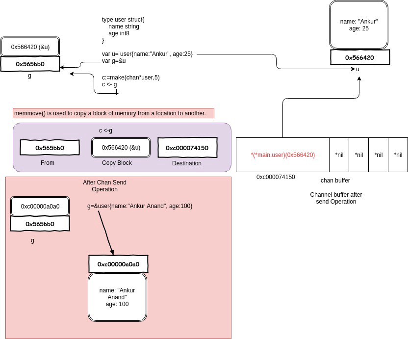

Golang
垃圾回收
最常见的垃圾回收算法有标记清除(Mark-Sweep) 和引用计数(Reference Count)，Go 语言采用的是标记清除算法。并在此基础上使用了三色标记法和写屏障技术，提高了效率。
标记清除收集器是跟踪式垃圾收集器，其执行过程可以分成标记（Mark）和清除（Sweep）两个阶段：
- 标记阶段 — 从根对象出发查找并标记堆中所有存活的对象；
- 清除阶段 — 遍历堆中的全部对象，回收未被标记的垃圾对象并将回收的内存加入空闲链表。
标记清除算法的一大问题是在标记期间，需要暂停程序（Stop the world，STW），标记结束之后，用户程序才可以继续执行。为了能够异步执行，减少 STW 的时间，Go 语言采用了三色标记法。
三色标记算法将程序中的对象分成白色、黑色和灰色三类。
- 白色：不确定对象。
- 灰色：存活对象，子对象待处理。
- 黑色：存活对象。
标记开始时，所有对象加入白色集合（这一步需 STW ）。首先将根对象标记为灰色，加入灰色集合，垃圾搜集器取出一个灰色对象，将其标记为黑色，并将其指向的对象标记为灰色，加入灰色集合。重复这个过程，直到灰色集合为空为止，标记阶段结束。那么白色对象即可需要清理的对象，而黑色对象均为根可达的对象，不能被清理。
三色标记法因为多了一个白色的状态来存放不确定对象，所以后续的标记阶段可以并发地执行。当然并发执行的代价是可能会造成一些遗漏，因为那些早先被标记为黑色的对象可能目前已经是不可达的了。所以三色标记法是一个 false negative（假阴性）的算法。
三色标记法并发执行仍存在一个问题，即在 GC 过程中，对象指针发生了改变。比如下面的例子：
1 | A (黑) -> B (灰) -> C (白) -> D (白) |
正常情况下，D 对象最终会被标记为黑色，不应被回收。但在标记和用户程序并发执行过程中，用户程序删除了 C 对 D 的引用，而 A 获得了 D 的引用。标记继续进行，D 就没有机会被标记为黑色了（A 已经处理过，这一轮不会再被处理）。
1 | A (黑) -> B (灰) -> C (白) |
为了解决这个问题，Go 使用了内存屏障技术，它是在用户程序读取对象、创建新对象以及更新对象指针时执行的一段代码，类似于一个钩子。垃圾收集器使用了写屏障（Write Barrier）技术，当对象新增或更新时，会将其着色为灰色。这样即使与用户程序并发执行，对象的引用发生改变时，垃圾收集器也能正确处理了。
一次完整的 GC 分为四个阶段：
1）标记准备(Mark Setup，需 STW)，打开写屏障(Write Barrier)
2）使用三色标记法标记（Marking, 并发）
3）标记结束(Mark Termination，需 STW)，关闭写屏障。
4）清理(Sweeping, 并发)
更多：Golang GC
Context
什么是 Context
在 Go 1.7 版本中正式引入新标准库 context。context 也叫作“上下文”，一般理解为程序单元的一个运行状态、现场、快照，其中上下是指存在上下层的传递，上会把内容传递给下，程序单元则是指goroutine；其主要的作用是在 goroutine 中进行上下文的传递，而在传递信息中又包含了 goroutine 的运行控制、上下文信息传递等功能。专门用来处理单个请求的多个goroutine之间与请求域的数据、取消信号、截止时间等相关操作。
为什么需要 Context
WaitGroup 和信道(channel)是常见的 2 种并发控制的方式。如果并发启动了多个子协程，需要等待所有的子协程完成任务，WaitGroup 非常适合于这类场景，例如下面的例子：
1 | var wg sync.WaitGroup |
wg.Wait() 会等待所有的子协程任务全部完成，所有子协程结束后，才会执行 wg.Wait() 后面的代码。
1 | Task 3 Done |
WaitGroup 只是傻傻地等待子协程结束，但是并不能主动通知子协程退出。假如开启了一个定时轮询的子协程，有没有什么办法，通知该子协程退出呢？这种场景下，可以使用 select+chan 的机制。
1 | var stop chan bool |
子协程使用 for 循环定时轮询，如果 stop 信道有值，则退出，否则继续轮询。
1 | worker1 send request |
更复杂的场景如何做并发控制呢？比如子协程中开启了新的子协程，或者需要同时控制多个子协程。这种场景下，select+chan的方式就显得力不从心了。
Go 语言提供了 Context 标准库可以解决这类场景的问题，Context 的作用和它的名字很像，上下文，即子协程的下上文。Context 有两个主要的功能：
- 通知子协程退出（正常退出，超时退出等）；
- 传递必要的参数。
context.WithCancel
context.WithCancel() 创建可取消的 Context 对象，即可以主动通知子协程退出。
控制单个协程
使用 Context 改写上述的例子，效果与 select+chan 相同。
1 | func reqTask(ctx context.Context, name string) { |
context.Backgroud()创建根 Context，通常在 main 函数、初始化和测试代码中创建，作为顶层 Context。context.WithCancel(parent)创建可取消的子 Context，同时返回函数cancel。- 在子协程中，使用 select 调用
<-ctx.Done()判断是否需要退出。 - 主协程中，调用
cancel()函数通知子协程退出。
控制多个协程
1 | func main() { |
为每个子协程传递相同的上下文 ctx 即可，调用 cancel() 函数后该 Context 控制的所有子协程都会退出。
1 | worker1 send request |
context.WithValue
如果需要往子协程中传递参数，可以使用 context.WithValue()。
1 | type Options struct{ Interval time.Duration } |
context.WithValue()创建了一个基于ctx的子 Context，并携带了值options。- 在子协程中，使用
ctx.Value("options")获取到传递的值，读取/修改该值。
context.WithTimeout
如果需要控制子协程的执行时间，可以使用 context.WithTimeout 创建具有超时通知机制的 Context 对象。
1 | func main() { |
WithTimeout()的使用与 WithCancel() 类似，多了一个参数，用于设置超时时间。执行结果如下：
1 | worker2 send request |
因为超时时间设置为 2s，但是 main 函数中，3s 后才会调用 cancel()，因此，在调用 cancel() 函数前，子协程因为超时已经退出了。
context.WithDeadline
超时退出可以控制子协程的最长执行时间，那 context.WithDeadline() 则可以控制子协程的最迟退出时间。
1 | func reqTask(ctx context.Context, name string) { |
WithDeadline用于设置截止时间。在这个例子中，将截止时间设置为1s后，cancel()函数在 3s 后调用，因此子协程将在调用cancel()函数前结束。- 在子协程中，可以通过
ctx.Err()获取到子协程退出的错误原因。
运行结果如下：
1 | worker2 send request |
可以看到，子协程 worker1 和 worker2 均是因为截止时间到了而退出。
锁
互斥锁
互斥即不可同时运行。即使用了互斥锁的两个代码片段互相排斥，只有其中一个代码片段执行完成后，另一个才能执行。
Go 标准库中提供了 sync.Mutex 互斥锁类型及其两个方法：
- Lock 加锁
- Unlock 释放锁
我们可以通过在代码前调用 Lock 方法，在代码后调用 Unlock 方法来保证一段代码的互斥执行，也可以用 defer 语句来保证互斥锁一定会被解锁。在一个 Go 协程调用 Lock 方法获得锁后，其他请求锁的协程都会阻塞在 Lock 方法，直到锁被释放。
互斥锁有两种状态：正常状态和饥饿状态。
在正常状态下，所有等待锁的 goroutine 按照FIFO顺序等待。唤醒的 goroutine 不会直接拥有锁，而是会和新请求锁的 goroutine 竞争锁的拥有。新请求锁的 goroutine 具有优势：它正在 CPU 上执行，而且可能有好几个，所以刚刚唤醒的 goroutine 有很大可能在锁竞争中失败。在这种情况下，这个被唤醒的 goroutine 会加入到等待队列的前面。 如果一个等待的 goroutine 超过 1ms 没有获取锁，那么它将会把锁转变为饥饿模式。
在饥饿模式下，锁的所有权将从 unlock 的 goroutine 直接交给交给等待队列中的第一个。新来的 goroutine 将不会尝试去获得锁，即使锁看起来是 unlock 状态, 也不会去尝试自旋操作，而是放在等待队列的尾部。
如果一个等待的 goroutine 获取了锁，并且满足以下其中的任何一个条件：(1)它是队列中的最后一个；(2)它等待的时候小于1ms。它会将锁的状态转换为正常状态。
正常状态有很好的性能表现，饥饿模式也是非常重要的，因为它能阻止尾部延迟的现象。
读写锁
想象一下这种场景，当你在银行存钱或取钱时，对账户余额的修改是需要加锁的，因为这个时候，可能有人汇款到你的账户，如果对金额的修改不加锁，很可能导致最后的金额发生错误。读取账户余额也需要等待修改操作结束，才能读取到正确的余额。大部分情况下，读取余额的操作会更频繁，如果能保证读取余额的操作能并发执行，程序效率会得到很大地提高。
保证读操作的安全，那只要保证并发读时没有写操作在进行就行。在这种场景下我们需要一种特殊类型的锁，其允许多个只读操作并行执行，但写操作会完全互斥。
这种锁称之为 多读单写锁 (multiple readers, single writer lock)，简称读写锁，读写锁分为读锁和写锁，读锁是允许同时执行的，但写锁是互斥的。一般来说，有如下几种情况：
- 读锁之间不互斥，没有写锁的情况下，读锁是无阻塞的，多个协程可以同时获得读锁。
- 写锁之间是互斥的，存在写锁，其他写锁阻塞。
- 写锁与读锁是互斥的，如果存在读锁，写锁阻塞，如果存在写锁，读锁阻塞。
Go 标准库中提供了 sync.RWMutex 互斥锁类型及其四个方法：
- Lock 加写锁
- Unlock 释放写锁
- RLock 加读锁
- RUnlock 释放读锁
读写锁的存在是为了解决读多写少时的性能问题，读场景较多时，读写锁可有效地减少锁阻塞的时间。
测试
接下来我们实现 2 个结构体 Lock 和 RWLock，并且都继承 RW 接口。RW 接口中定义了 2 个操作，读(Read)和写(Write)。
- Lock
1 | type RW interface { |
- RWLock
1 | type RWLock struct { |
栈与堆
Go 程序会在 2 个地方为变量分配内存，一个是全局的堆(heap)空间用来动态分配内存，另一个是每个 goroutine 的栈(stack)空间。与 Java、Python 等语言类似，Go 语言实现垃圾回收(Garbage Collector)机制，因此呢，Go 语言的内存管理是自动的，通常开发者并不需要关心内存分配在栈上，还是堆上。但是从性能的角度出发，在栈上分配内存和在堆上分配内存，性能差异是非常大的。
在函数中申请一个对象，如果分配在栈中，函数执行结束时自动回收，如果分配在堆中，则在函数结束后某个时间点进行垃圾回收。
在栈上分配和回收内存的开销很低，只需要 2 个 CPU 指令：PUSH 和 POP，一个是将数据 push 到栈空间以完成分配，pop 则是释放空间，也就是说在栈上分配内存，消耗的仅是将数据拷贝到内存的时间，而内存的 I/O 通常能够达到 30GB/s，因此在栈上分配内存效率是非常高的。
在堆上分配内存，一个很大的额外开销则是垃圾回收。Go 语言使用的是标记清除算法，并且在此基础上使用了三色标记法和写屏障技术，提高了效率。
map实现原理
简单说明一下：在计算机科学里，被称为相关数组、map、符号表或者字典，是由一组 <key, value> 对组成的抽象数据结构，，并且同一个 key 只会出现一次。
有两个关键点：map 是由 key-value 对组成的；key 只会出现一次。
哈希查找表用一个哈希函数将 key 分配到不同的桶（bucket，也就是数组的不同 index）。这样，开销主要在哈希函数的计算以及数组的常数访问时间。在很多场景下，哈希查找表的性能很高。
哈希查找表一般会存在“碰撞”的问题，就是说不同的 key 被哈希到了同一个 bucket。一般有两种应对方法：链表法和开放地址法。链表法将一个 bucket 实现成一个链表，落在同一个 bucket 中的 key 都会插入这个链表。开放地址法则是碰撞发生后，通过一定的规律，在数组的后面挑选“空位”，用来放置新的 key。
Go 语言采用的是哈希查找表，并且使用链表解决哈希冲突。
内存模型
在源码中，表示 map 的结构体是 hmap，它是 hashmap 的“缩写”：
1 | // A header for a Go map. |
说明一下，B 是 buckets 数组的长度的对数，也就是说 buckets 数组的长度就是 2^B。bucket 里面存储了 key 和 value，后面会再讲。
buckets 是一个指针，最终它指向的是一个结构体：
1 | type bmap struct { |
但这只是表面(src/runtime/hashmap.go)的结构，编译期间会给它加料，动态地创建一个新的结构：
1 | type bmap struct { |
bmap 就是我们常说的“桶”，桶里面会最多装 8 个 key，这些 key 之所以会落入同一个桶，是因为它们经过哈希计算后，哈希结果是“一类”的。在桶内，又会根据 key 计算出来的 hash 值的高 8 位来决定 key 到底落入桶内的哪个位置（一个桶内最多有8个位置）。

当 map 的 key 和 value 都不是指针，并且 size 都小于 128 字节的情况下，会把 bmap 标记为不含指针，这样可以避免 gc 时扫描整个 hmap。但是，我们看 bmap 其实有一个 overflow 的字段，是指针类型的，破坏了 bmap 不含指针的设想，这时会把 overflow 移动到 extra 字段来。
key定位过程
key 经过哈希计算后得到哈希值，共 64 个 bit 位（64位机，32位机就不讨论了，现在主流都是64位机），计算它到底要落在哪个桶时，只会用到最后 B 个 bit 位。还记得前面提到过的 B 吗？如果 B = 5，那么桶的数量，也就是 buckets 数组的长度是 2^5 = 32。
例如，现在有一个 key 经过哈希函数计算后，得到的哈希结果是：
| 1 | 10010111 | 000011110110110010001111001010100010010110010101010 │ 01010 |
用最后的 5 个 bit 位，也就是 01010，值为 10，也就是 10 号桶。这个操作实际上就是取余操作，但是取余开销太大，所以代码实现上用的位操作代替。
再用哈希值的高 8 位，找到此 key 在 bucket 中的位置，这是在寻找已有的 key。最开始桶内还没有 key，新加入的 key 会找到第一个空位，放入。
buckets 编号就是桶编号，当两个不同的 key 落在同一个桶中，也就是发生了哈希冲突。冲突的解决手段是用链表法：在 bucket 中，从前往后找到第一个空位。这样，在查找某个 key 时，先找到对应的桶，再去遍历 bucket 中的 key。

上图中，假定 B = 5，所以 bucket 总数就是 2^5 = 32。首先计算出待查找 key 的哈希，使用低 5 位 00110，找到对应的 6 号 bucket，使用高 8 位 10010111，对应十进制 151，在 6 号 bucket 中寻找 tophash 值（HOB hash）为 151 的 key，找到了 2 号槽位，这样整个查找过程就结束了。
如果在 bucket 中没找到，并且 overflow 不为空，还要继续去 overflow bucket 中寻找，直到找到或是所有的 key 槽位都找遍了，包括所有的 overflow bucket。
IO密集型和CPU密集型
CPU密集型，也叫计算密集型，一般是指服务器的硬盘、内存硬件性能相对CPU好很多，或者使用率低很多。系统运行CPU读写I/O(硬盘/内存)时可以在很短的时间内完成，几乎没有阻塞（等待I/O的实时间）时间，而CPU一直有大量运算要处理，因此CPU负载长期过高。
CPU密集几乎无I/O阻塞，CPU一直会全速运行。如果是单核情况下，开多线程是没有意义的，说白了就是一个CPU来回切着运行而已，徒增线程切换的资源消耗，卵用没有。可见，CPU密集任务只有在多核CPU上、开多线程才可能提速。
CPU使用率较高时（如我们训练算法模型、搞训练集），通常线程数只需要设置为CPU核心数的线程个数就可以了。单CPU对应单线程效率最高。
一般其计算公式可遵循：CPU密集型核心线程数 = CPU核数。
I/O密集型相反，一般是指服务器CPU的性能相对硬盘、内存硬件好很多，或者使用率低很多。系统运行多是CPU在等I/O (硬盘/内存) 的读写操作，此类情景下CPU负载并不高。
I/O密集型的程序一般在达到性能极限时，CPU占用率仍然较低。这可能是因为任务本身需要大量I/O操作，而程序的逻辑做得并不好，没有充分利用CPU能力，导致线程空余时间很多。通常我们会开CPU核心数数倍的线程，在线程进行 I/O 操作 CPU 空闲时，启用其他线程继续使用 CPU，以提高 CPU 的使用率，充分利用CPU资源。
一般其计算公式可遵循：I/O密集型核心线程数 = CPU核数 / （1-阻塞系数）。
阻塞系数在在0到1范围内。一般为0.8~0.9之间，也可以取0.8或者0.9。对于双核CPU来说，它比较理想的线程数就是20，当然这都不是绝对的，需要根据实际情况以及实际业务来调整。
- I/O密集型：
当线程等待时间所占比例越高，需要越多线程，启用其他线程继续使用CPU，以此提高CPU的利用率； - CPU密集型：
当线程CPU时间所占比例越高，需要越少的线程。任务越多，花在进程、线程切换的时间就越多，通常线程数和CPU核数一致即可，这一类型在开发中主要出现在一些计算业务频繁的逻辑中。
I/O密集型任务的特点是CPU消耗很少，任务的大部分时间都在等待I/O操作完成（磁盘I/O远低于内存、CPU速度）。涉及到网络、磁盘I/O的任务多是I/O密集型任务。I/O密集型任务，线程数越多，CPU效率越高，但也有相对限度。
channel
介绍
不要通过共享内存来通信，而要通过通信来实现内存共享。
这就是 Go 的并发哲学，它依赖 CSP 模型，基于 channel 实现。
CSP 经常被认为是 Go 在并发编程上成功的关键因素。CSP 全称是 “Communicating Sequential Processes”，这也是 Tony Hoare 在 1978 年发表在 ACM 的一篇论文。论文里指出一门编程语言应该重视 input 和 output 的原语，尤其是并发编程的代码。
在文章中，CSP 也是一门自定义的编程语言，作者定义了输入输出语句，用于 processes 间的通信（communication）。processes 被认为是需要输入驱动，并且产生输出，供其他 processes 消费，processes 可以是进程、线程、甚至是代码块。输入命令是：!，用来向 processes 写入；输出是：?，用来从 processes 读出。这篇文章要讲的 channel 正是借鉴了这一设计。
Go 的并发原则非常优秀，目标就是简单：尽量使用 channel；把 goroutine 当作免费的资源，随便用。
数据结构
1 | type hchan struct { |
关于字段的含义都写在注释里了，再来重点说几个字段：
buf 指向底层循环数组，只有缓冲型的 channel 才有。
sendx，recvx 均指向底层循环数组，表示当前可以发送和接收的元素位置索引值（相对于底层数组）。
sendq，recvq 分别表示被阻塞的 goroutine，这些 goroutine 由于尝试读取 channel 或向 channel 发送数据而被阻塞。
waitq 是 sudog 的一个双向链表，而 sudog 实际上是对 goroutine 的一个封装：
1 | type waitq struct { |
lock 用来保证每个读 channel 或写 channel 的操作都是原子的。
例如，创建一个容量为 6 的，元素为 int 型的 channel 数据结构如下 ：

操作数据
| 操作 | nil channel | closed channel | not nil, not closed channel |
|---|---|---|---|
| close | panic | panic | 正常关闭 |
| 读 <- ch | 阻塞 | 读到对应类型的零值 | 阻塞或正常读取数据。缓冲型 channel 为空或非缓冲型 channel 没有等待发送者时会阻塞 |
| 写 ch <- | 阻塞 | panic | 阻塞或正常写入数据。非缓冲型 channel 没有等待接收者或缓冲型 channel buf 满时会被阻塞 |
关闭channel
close 逻辑比较简单，对于一个 channel，recvq 和 sendq 中分别保存了阻塞的发送者和接收者。关闭 channel 后，对于等待接收者而言，会收到一个相应类型的零值。对于等待发送者，会直接 panic。所以，在不了解 channel 还有没有接收者的情况下，不能贸然关闭 channel。
close 函数先上一把大锁，接着把所有挂在这个 channel 上的 sender 和 receiver 全都连成一个 sudog 链表，再解锁。最后，再将所有的 sudog 全都唤醒。
唤醒之后，该干嘛干嘛。sender 会继续执行 chansend 函数里 goparkunlock 函数之后的代码，很不幸，检测到 channel 已经关闭了，panic。receiver 则比较幸运，进行一些扫尾工作后，返回。这里，selected 返回 true，而返回值 received 则要根据 channel 是否关闭，返回不同的值。如果 channel 关闭，received 为 false，否则为 true。这我们分析的这种情况下，received 返回 false。
发送和接收元素的本质
channel 的发送和接收操作本质上都是 “值的拷贝”，无论是从 sender goroutine 的栈到 chan buf，还是从 chan buf 到 receiver goroutine，或者是直接从 sender goroutine 到 receiver goroutine。

一开始构造一个结构体 u，地址是 0x56420，图中地址上方就是它的内容。接着把 &u 赋值给指针 g，g 的地址是 0x565bb0，它的内容就是一个地址，指向 u。
main 程序里，先把 g 发送到 c，根据 copy value 的本质，进入到 chan buf 里的就是 0x56420，它是指针 g 的值（不是它指向的内容），所以打印从 channel 接收到的元素时，它就是 &{Ankur 25}。因此，这里并不是将指针 g “发送” 到了 channel 里，只是拷贝它的值而已。
资源泄漏
Channel 可能会引发 goroutine 泄漏。
泄漏的原因是 goroutine 操作 channel 后，处于发送或接收阻塞状态，而 channel 处于满或空的状态，一直得不到改变。同时，垃圾回收器也不会回收此类资源，进而导致 gouroutine 会一直处于等待队列中，不见天日。
另外，程序运行过程中，对于一个 channel，如果没有任何 goroutine 引用了，gc 会对其进行回收操作，不会引起内存泄漏。
channel应用
任务定时
与 timer 结合，一般有两种玩法：实现超时控制，实现定期执行某个任务。
有时候，需要执行某项操作，但又不想它耗费太长时间，上一个定时器就可以搞定：
1 | select { |
等待 100 ms 后，如果 s.stopc 还没有读出数据或者被关闭，就直接结束。这是来自 etcd 源码里的一个例子，这样的写法随处可见。
定时执行某个任务，也比较简单：
1 | func worker() { |
每隔 1 秒种，执行一次定时任务。
控制并发
有时需要定时执行几百个任务，例如每天定时按城市来执行一些离线计算的任务。但是并发数又不能太高，因为任务执行过程依赖第三方的一些资源，对请求的速率有限制。这时就可以通过 channel 来控制并发数。
1 | var limit = make(chan int, 3) |
构建一个缓冲型的 channel，容量为 3。接着遍历任务列表，每个任务启动一个 goroutine 去完成。真正执行任务，访问第三方的动作在 w() 中完成，在执行 w() 之前，先要从 limit 中拿“许可证”，拿到许可证之后，才能执行 w()，并且在执行完任务，要将“许可证”归还。这样就可以控制同时运行的 goroutine 数。
这里，limit <- 1 放在 func 内部而不是外部，原因是：
如果在外层，就是控制系统 goroutine 的数量，可能会阻塞 for 循环，影响业务逻辑。
limit 其实和逻辑无关，只是性能调优，放在内层和外层的语义不太一样。
还有一点要注意的是，如果 w() 发生 panic，那“许可证”可能就还不回去了，因此需要使用 defer 来保证。